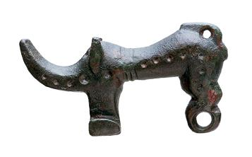

Hallazgos · Vida doméstica
Vida cotidiana
La vida cotidiana en la época romana incluía actividades como cocinar, iluminar las viviendas, trabajar y almacenar alimentos. Los objetos que han llegado hasta nosotros ayudan a reconstruir algunas de estas prácticas y a conocer mejor las comunidades del pasado.

La vida en el pasado
Los objetos nos cuentan historias
Las herramientas, las lámparas y los recipientes permiten conocer diferentes tareas domésticas y actividades productivas. Su estudio ayuda a comprender los recursos disponibles y los hábitos de las personas.
Selecciona cada objeto para descubrir qué función podía tener en el mundo romano.
Explora los objetos
La vida de cada día
Pulsa sobre una imagen para consultar su ficha.